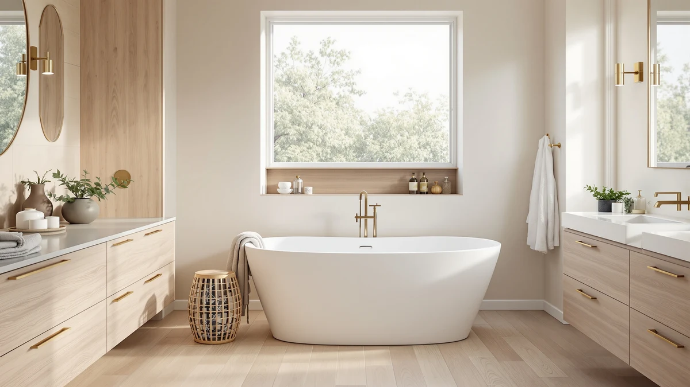

WOODBRIDGE 72"×35 3/8" Whirlpool Review (2026): Worth It?
Prices and picks verified as of September 2026. Independent, reader-supported reviews.


Quick Answer
This WOODBRIDGE 72"×35 3/8" whirlpool review breaks down whether the $2,379.00 price makes sense for a tub that runs both whirlpool and air jets in a 72-inch shell. It's the largest and most expensive of the four freestanding tubs compared here, built for two people who want hydrotherapy jets rather than a plain soak. If you want the same size and jets for less, the WOODBRIDGE Double Slipper below costs $200.97 less, and if jets aren't a priority, the FerdY acrylic alternatives cut the price by more than half.
Our pick: WOODBRIDGE 72"×35-3/8" Whirlpool & Air, $2,379.00 Check Price on Amazon
Bottom line: our top pick is the WOODBRIDGE 72"×35-3/8" Whirlpool & Air at $2,389.
Things to Know Before You Buy
- This WOODBRIDGE 72"×35 3/8" whirlpool review leads with size, because 72 by 35-3/8 inches is large enough for two people, and that footprint decides whether the tub fits your bathroom.
- The tub runs both whirlpool jets and air jets, a dual system the two FerdY alternatives below don't offer at any price.
- At $2,379.00, it's the most expensive tub in this comparison, though the WOODBRIDGE Double Slipper matches its size and jets for $200.97 less.
- The listing doesn't state a shell material, so material transparency isn't this tub's strength even at the higher price.
- A tub this size and this equipped needs a dedicated electrical circuit for the jets plus the floor space and plumbing rough-in freestanding tubs require.
This WOODBRIDGE 72"×35 3/8" whirlpool review looks at whether the tub's dual jet system and generous 72-inch shell justify a $2,379.00 price tag. WOODBRIDGE sells this model as the two-person option in its whirlpool lineup, pairing whirlpool jets with air jets in one tub, a combination neither FerdY alternative in this comparison offers. We compared it against three other freestanding tubs, including a same-size WOODBRIDGE Double Slipper priced $200.97 lower, to see what the extra jets and size buy you.
The trade this tub makes is straightforward: size and hydrotherapy in exchange for the highest price of the four options here. At 72 inches long and 35-3/8 inches wide, it has more interior room than any of the three alternatives, and the dual whirlpool-and-air jet system turns a soak into an actual massage rather than just hot water. What it doesn't offer is a stated shell material, so buyers who want that confirmed upfront will need to weigh the jets and size against that gap in the listing.
Why You Should Trust Us
Ilane Tall has covered bathroom fixtures for this site for years, from budget toilet seats to freestanding tubs priced well over $2,000. For this WOODBRIDGE 72"×35 3/8" whirlpool review, we compared the tub's price, size, and jet features against three direct competitors, including another WOODBRIDGE model built to the same dimensions.
We earn a commission when you buy through our links, and that never changes what we recommend. When a listing leaves out information a buyer needs, such as the shell material here, we say so instead of guessing.
Our Research Experience
For this WOODBRIDGE 72"×35 3/8" whirlpool review, we focused on the two things that decide whether a $2,379.00 whirlpool tub earns its price: size and what the jet system adds. We measured the 72-inch by 35-3/8-inch dimensions against the three alternatives in this comparison to see which bathrooms could accommodate a tub this large.
Size turned out to matter as much as the jets. At 72 inches long, this WOODBRIDGE model is the longest tub in the comparison by five inches over the two FerdY alternatives, and the extra width gives two people enough room to soak side by side, something the 67-inch acrylic tubs below can't offer.
The jet system is the other half of the equation. This tub runs whirlpool jets and air jets together, a dual setup that neither FerdY Bali Elite nor FerdY Sentosa includes at any price. Whirlpool jets push water through targeted nozzles for a deeper massage, while air jets release a gentler stream of bubbles across more of the tub's surface, and running both together is what separates this tub from a plain soaking model.
We also priced out what a buyer is choosing between. At $2,379.00, this tub costs $200.97 more than the WOODBRIDGE Double Slipper, which matches it on size and jets but trades the standard layout for a double-slipper shape with raised backrests at both ends. Against the two FerdY tubs, the price gap widens to well over $1,200, though neither of those alternatives includes jets at all.
Delivery is worth planning around no matter which tub you choose. A 72-inch tub with a jet motor is heavier and bulkier than a standard soaking tub, so measure doorways and hallway turns before it ships, and budget for the dedicated electrical circuit the whirlpool and air jet pumps require.
Overview & Specs

WOODBRIDGE 72"×35-3/8" Whirlpool & Air
What we like
- 72-inch by 35-3/8-inch shell is the largest of the four tubs in this comparison
- Runs whirlpool jets and air jets together, a combination neither FerdY alternative offers
- Extra width gives two people room to soak side by side
Flaws but not dealbreakers
- No shell material listed in the specifications
- Costs $2,379.00, the highest price of the four tubs compared
- Requires a dedicated electrical circuit for the jet pumps, adding to installation cost
| Material | — |
| Size | — |
The WOODBRIDGE 72"×35-3/8" Whirlpool & Air is the large-format, dual-jet option in this comparison, built for bathrooms with the floor space to spare and buyers who want more than a plain soak. At 72 inches long and 35-3/8 inches wide, it's the biggest shell of the four tubs reviewed here, wide enough for two people to use it together.
At $2,379.00, it's priced above every alternative in this comparison, including the WOODBRIDGE Double Slipper that matches its size and jets for $200.97 less. This listing doesn't state a shell material, so if that detail matters to your decision, weigh the size and jet system against that gap before you order.
What We Liked
The clearest advantage of the WOODBRIDGE 72"×35-3/8" Whirlpool & Air is the jet system. Whirlpool jets and air jets running together give this tub a hydrotherapy option that neither FerdY Bali Elite nor FerdY Sentosa can match, since both of those alternatives ship as plain acrylic soakers.
Size works in its favor too. At 72 inches long and 35-3/8 inches wide, it's five inches longer than the two FerdY tubs in this comparison, and that extra length turns a solo soak into something two people can share.
The WOODBRIDGE name carries weight here as well. The brand shows up across several freestanding tubs we've reviewed on this site, and buyers who already trust the build quality of the 59-inch or 71-inch WOODBRIDGE models have reason to expect similar fit and finish in this larger whirlpool version.
Placement flexibility matters too. Because the tub is freestanding rather than built into an alcove, you can position it as a centerpiece, and the 72-inch length makes that statement even bigger in a primary bathroom with room to spare.
What Could Be Better
This WOODBRIDGE 72"×35 3/8" whirlpool review would be more straightforward if the listing named a shell material. Every alternative we compared it against states its construction upfront, either acrylic or, in the case of the Double Slipper, the same WOODBRIDGE build this tub presumably shares. This listing leaves that field blank.
Price is the bigger sticking point. At $2,379.00, it costs $200.97 more than the WOODBRIDGE Double Slipper, which matches this tub's size and jets in a different shape, and well over $1,200 more than either FerdY alternative, though those two tubs skip jets entirely.
The size that makes this tub roomy enough for two people also means it demands more floor space and a heavier delivery than the 67-inch FerdY tubs. If your bathroom can't spare 72 inches of length, the smaller alternatives below are the only options that will fit.
Who Is It For?
Buy the WOODBRIDGE 72"×35-3/8" Whirlpool & Air if your bathroom has the floor space for a 72-inch tub and you want whirlpool and air jets rather than a plain soak. It suits two-person households and anyone who considers hydrotherapy a requirement, not a bonus.
It also suits buyers who already trust the WOODBRIDGE name from another size in the lineup and don't need the listing to confirm a specific shell material before buying.
Skip it if your bathroom is on the smaller side or if jets aren't worth the premium to you. The FerdY Bali Elite and FerdY Sentosa below cost under half as much and free up budget for the faucet and drain every freestanding tub requires.
Alternatives to Consider
If the missing material spec or the $2,379.00 price rules out the WOODBRIDGE 72"×35-3/8" Whirlpool & Air, three other freestanding tubs are worth a look. Each trades something against the tub reviewed above, whether that's a lower price, a different shape, or a smaller footprint.

Editor's Pick
WOODBRIDGE 72"×35-3/8" Double Slipper Whirlpool&Air
This WOODBRIDGE Double Slipper matches the tub reviewed above on size and jets, running the same whirlpool-and-air combination in a 72-inch by 35-3/8-inch shell, for $200.97 less at $2,178.03. Choose it if you want the raised double-slipper backrests over the standard shape and prefer to save on price.
$2,178.03
Check Price on Amazon
Best Value
FerdY 67" Bali Elite Acrylic
The FerdY Bali Elite is a 67-inch acrylic freestanding tub priced at $1,139.99, well under half the cost of the WOODBRIDGE whirlpool tub above. It skips jets entirely, so choose it if a plain soak is enough and price matters more than hydrotherapy.
$1,139.99
Check Price on Amazon
Premium Choice
FerdY Sentosa 67" Acrylic Freestanding
The FerdY Sentosa is another 67-inch acrylic freestanding tub, priced at $1,099.99, the lowest price of the four tubs compared here. Like the Bali Elite, it has no jet system, making it the pick for buyers who want a freestanding look without the WOODBRIDGE whirlpool premium.
$1,099.99
Check Price on AmazonIs the WOODBRIDGE 72"×35-3/8" Whirlpool & Air worth the price?
At $2,379.00, this WOODBRIDGE 72"×35 3/8" whirlpool review found the tub costs more than every alternative compared, including a same-size Double Slipper version with the same jets for $200.97 less.
What size bathroom fits the WOODBRIDGE 72"×35-3/8" Whirlpool & Air?
The tub measures 72 inches long and 35-3/8 inches wide, the largest footprint of the four tubs in this comparison.
Frequently Asked Questions
Is the WOODBRIDGE 72"×35-3/8" Whirlpool & Air worth the price?
At $2,379.00, this WOODBRIDGE 72"×35 3/8" whirlpool review found the tub costs more than every alternative compared, including a same-size Double Slipper version with the same jets for $200.97 less. It's worth the money if you want the standard shape and the WOODBRIDGE name specifically, not if you're comparing strictly on price.
What size bathroom fits the WOODBRIDGE 72"×35-3/8" Whirlpool & Air?
The tub measures 72 inches long and 35-3/8 inches wide, the largest footprint of the four tubs in this comparison. That size fits primary bathrooms with room to spare, not the condo or guest bathrooms where the 67-inch FerdY tubs would be a better match.
Does the WOODBRIDGE 72"×35-3/8" Whirlpool & Air need special electrical work?
Yes. The whirlpool and air jet pumps need a dedicated electrical circuit, which is a cost and installation step the two jet-free FerdY alternatives in this comparison don't require. Budget for that work along with the faucet and drain every freestanding tub needs.
Final Verdict
The verdict of this WOODBRIDGE 72"×35 3/8" whirlpool review: the tub earns its $2,379.00 price only if you want the dual whirlpool-and-air jet system in the largest shell of the four tubs we compared. WOODBRIDGE backs that size and hydrotherapy with a listing that skips the shell material, and the same-size Double Slipper version matches the jets for $200.97 less. If price matters more than jets, the FerdY alternatives cut the cost by more than half. If size and hydrotherapy are what you're after, the WOODBRIDGE 72"×35-3/8" Whirlpool & Air is the tub built for that job.